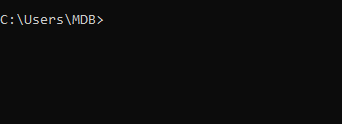

In this lesson, we will download, install and set up Tailwind CSS in the easiest possible way, in just a blink of an eye.
We will be using the TW Elements version of Tailwind CSS. Why?
As I mentioned in the previous lessons, you can look at TW Elements as Tailwind CSS on steroids. And it's free.
TW Elements contains all the features of Tailwind CSS and additionally provides you with:
Let's get started!
Note: I assume you have completed the previous Basics section and have already installed Node JS, Vite and MDB GO.
If not, go back to the 2 lessons below and follow all the steps there:
You only need to install Node JS, Vite and MDB GO once, so once you've done that, creating and preparing each new project with Tailwind CSS will be a matter of seconds for you.
Launch a terminal and log in to the MDB account.
To log in to MDB GO, in the terminal type the mdb login command
and press enter.
Then enter your username and password that you set when registering your MDB GO account.

Next, navigate to the path where you want to place your project (I put it on
the desktop, so I type cd desktop) and then initialize Tailwind
Elements with the command below:
The tailwind-elements folder should appear in the location you
chose.

Type cd tailwind-elements to enter the folder of our project
and then run the following command to install all the dependencies:
It may take a while to install all of them.

Run the app by typing the following command:
After entering the above command, MDB GO should start a local server on your computer and launch a browser window with your project.

As you can see above, in my case it is the following address:
I know I've mentioned this before, but it still amazes me how easy it is with MDB GO. If not for this, the installation and configuration of the Tailwind CSS project would take a lot of time and many steps. Hats off to MDB GO developers!
This is not a necessary step, but for clarity and order it is better to rename the project.
So I rename the tailwind-elements folder to
tailwind-css-tutorial.
Note: To change the name you need to stop the processes
in the terminal. Click ctrl + c (or
cmd + c on macOS) to do this..
In addition, in the main project folder you will find the
.mdb file with the following code:
Let's replace projectName from
tailwind-elements with
tailwind-css-tutorial . Thanks to this, when
we later publish our project to the Internet, we will get a properly named
link.
After renaming, type the npm start command in the terminal
again to start the project again.
Now we're ready to move on!